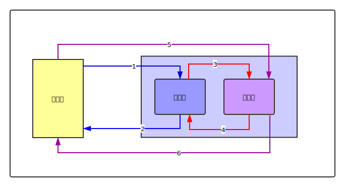

Git 的结构
Git 分成三个区域，工作区，暂存区，版本库
工作区：就是和
.git文件夹在同一级的工程目录。暂存区：
.git中的index中存储暂存区的目录树版本库：
.git中的其他地方存储版本库的内容，这个里面包含历史提交和即将要推送到远程版本库的内容。
工作区的文件我们可以从文件管理器直观的看到，暂存区和版本库的文件git只是存储的相应的目录树，具体文件的内容在.git\object对象库中存储，并且使用的是差异化的存储，所以不能之间看到相应的文件，但是可以利用Git提供的工具间接的了解其中的内容。

查看差异
git diff： 比较工作区和暂存区的差异git diff --cached： 比较暂存区和版本库的差异git diff HEAD: 比较工作区和版本库的差异
将上面命令中的giff换成difftool, 可以使用自定义的图形工具比较差异文件。
1. 从工作区到暂存区
如果想把工作区所做的改动(添加文件、修改内容、删除文件)，可以使用git add命令。
git add filename: 把工作区文件filename的改动添加到暂存区git reset -- filename: 把添加到暂存区的文件filename 撤销，工作区的文件filename不变，其实就是撤销刚才的git add filename命令。git add .: 把工作区所有改动添加到暂存区git reset: 撤销git add .操作git add -i: 用交互的方式选择添加哪些文件到暂存区
2. 从暂存区到工作区
git checkout filename: 把暂存区的文件filename添加到工作区，工作区的该文件会被覆盖，其实相当于git add filename的逆操作。git reset filename: 用暂存区的文件filename覆盖工作区的文件，相当于git add filename的反操作git checkout .: 把暂存区的所有文件添加到工作区，相当于git add .的逆操作。git reset: 撤销git add .操作，即用暂存区的内容覆盖工作区的内容。
git checkout会清除工作区中尚未add到暂存区中的内容，一定不要用错，否则自己做的工作就要白费了。
3. 从暂存区到版本库
如果想把在暂存区的内容提交到版本库，推送到远程版本库，可以使用git commit命令。
git commit: 提交暂存区的内容到版本库，需要写提交说明。git commit --allow-empty: 允许提交空的内容git commit --amend: 修补提交，不生成新的提交，而是在上一次提交的基础上修改提交内容。git reset --soft HEAD^: 撤销最新的提交，相当于git commit的逆操作。 命令解析：--soft选项指定不改变工作区和暂存区, HEAD指向最新的提交，HEAD^指向上一次提交，合起来该命令实现的功能就是撤销最新的提交，而工作区和暂存区的内容不改变。
4. 从版本库到暂存区
git reset HEAD^: 工作区不改变，暂存区回退到上一次提交，版本库回退到上一次提交。
5. 工作区直接到版本库
6. 版本库直接到工作区
git reset --hard HEAD^: 工作区、暂存区都会回退到上一次提交，版本库回退到上一次提交
常用命令解析
git diff
git log
git log -g -2 HEAD : 查看最近HEAD指向的两次提交
git add
git checkout
有两种主要的用法，切换分支 和 检出文件
检出文件：
git checkout -- filename: 从暂存区检出filename到工作区，工作区未提交的内容会丢失git checkout -- '.':用暂存区覆盖工作区
git reset
reset就是重置的意思，该命令的本质是修改HEAD指向的提交ID，可以使用不同的参数指定对暂存区和工作区的影响。
git reset: 其对应的完成形式应该是git reset --mixed HEAD, 含义是用HEAD指向的内容覆盖暂存区内容，
它是git add .的逆操作。git reset -- filename: 其完整形式是git reset -- filename HEAD, 含义是用HEAD指向的文件filename的内容覆盖暂存区内容，它是git add filename的逆操作。git reset --mixed: 工作区内容不变，暂存区和版本库重置；git reset --soft: 工作区和暂存区内容都不变，版本库重置；git reset --hard: 工作区，暂存区和版本库都改变。
例如，git reset --soft HEAD^, 撤销最近的提交，暂存区和工作区都不变，要想恢复直接git commit; git reset --mixed HEAD^, 撤销最近的提交和暂存区的内容，要想恢复需要git add ., git commit两条命令； git reset --hard HEAD^ 工作区，暂存区都会被上一次提交覆盖，工作区保持和上一次提交一致，未提交的内容会丢失。